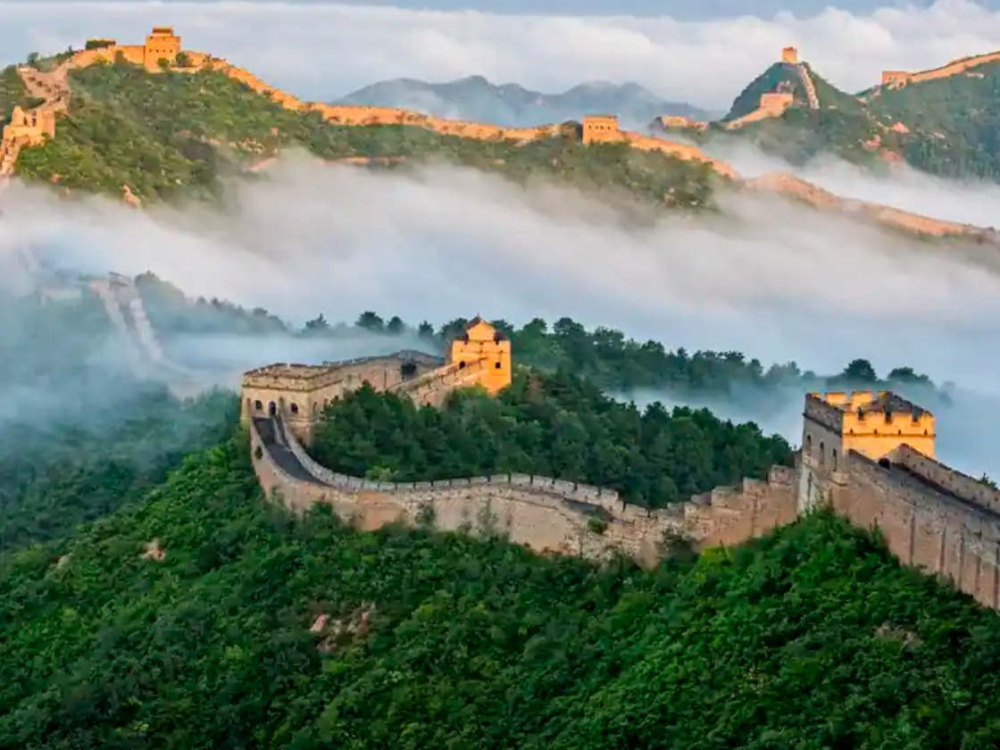

China is one of the world’s most ancient civilizations and today a global superpower. Here are some key highlights:
Geography: China is the 4th largest country by area (after Russia, Canada, and the U.S.). It shares borders with 14 countries and has diverse landscapes—deserts (Gobi, Taklamakan), plateaus (Tibet), mountains (Himalayas), and fertile river basins (Yangtze, Yellow River).
Population: With over 1.4 billion people, China is the second most populous country (after India).
History:
China has one of the world’s oldest continuous civilizations (over 4,000 years).
Ancient dynasties like Xia, Shang, Zhou, Qin, Han, Tang, Ming, and Qing shaped Chinese culture.
The Great Wall of China was built to protect against invasions.
China invented paper, gunpowder, compass, and printing—known as the Four Great Inventions.
Language: The official language is Mandarin Chinese, but there are many dialects (Cantonese, Shanghainese, Hokkien, etc.). Chinese writing uses characters (logograms) instead of alphabets.
Culture:China has a rich cultural heritage—Confucianism, Taoism, and Buddhism have deeply influenced its philosophy, art, and social values.